Disneyland Xmas 2005
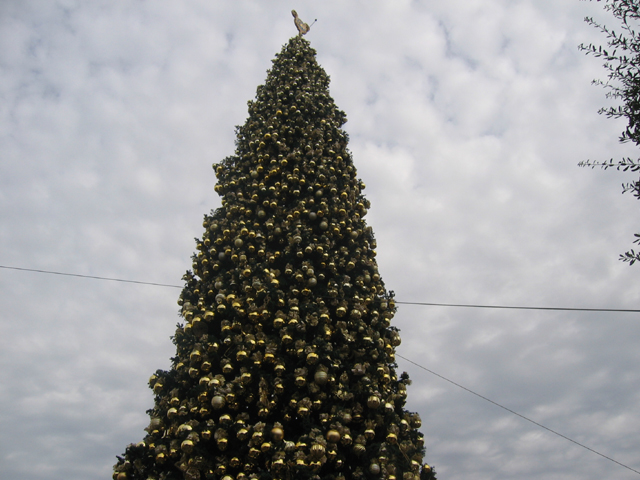
We always traditionally spend a day or two at the DLR for Christmas every year!
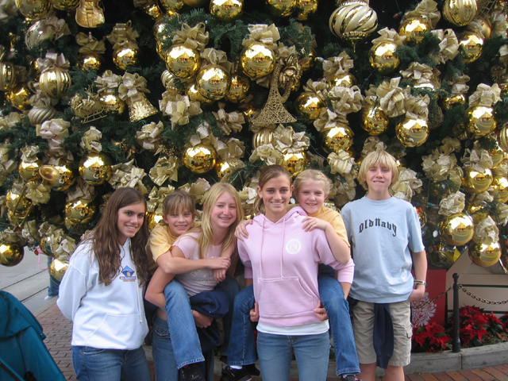
Its sad when a parks Christmas tree is bigger than its castle!
 Heres your I can't see anything Space Mtn photo!
Heres your I can't see anything Space Mtn photo!
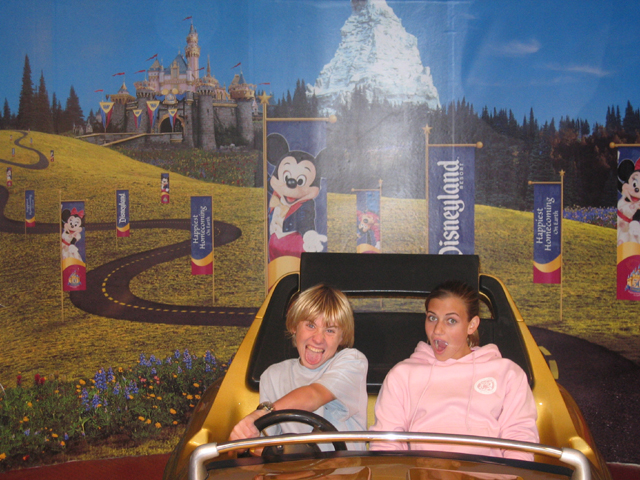
I not only suck at driving, but I have the stupidest look on my face EVER!!!
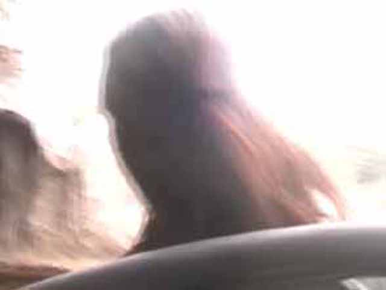
Arrow rides are fun!
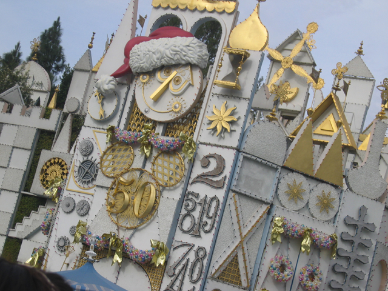
Small World is decorated for the holidays!
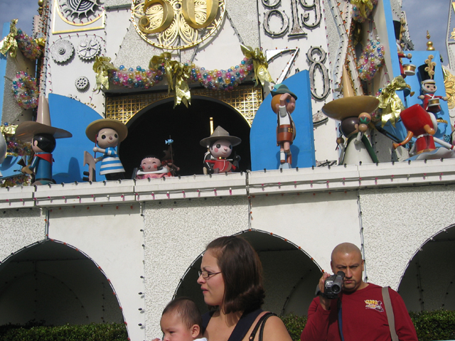
But it still drills its song into your head and keeps it there for months!
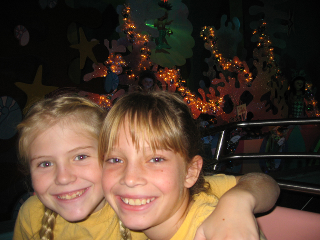
Small World is currently taking over our minds!
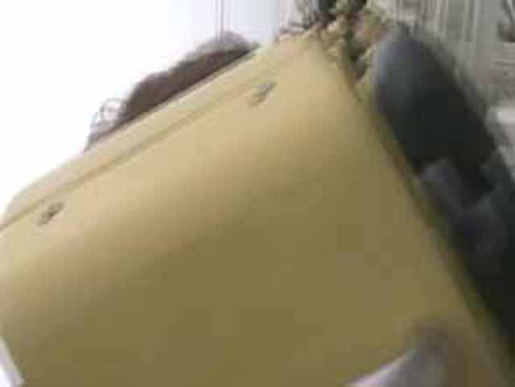
California Trimming was running well today. Good airtime on the 1st hill and good Positive Gs in the loop!
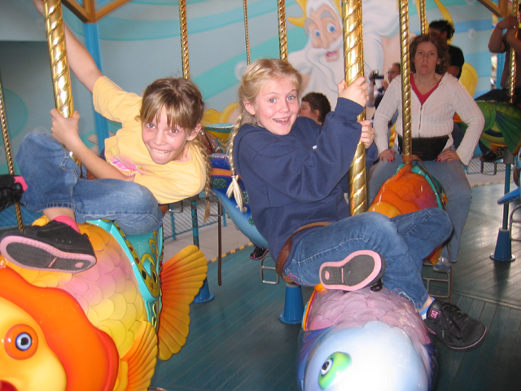
Girl Power!
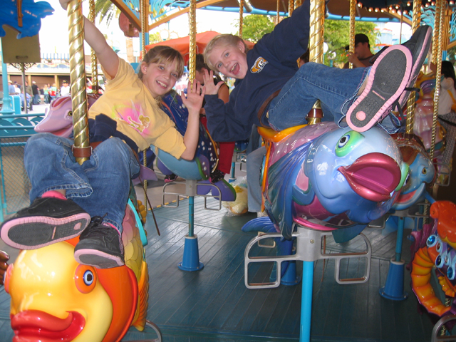
A little TOO MUCH Girl Power!
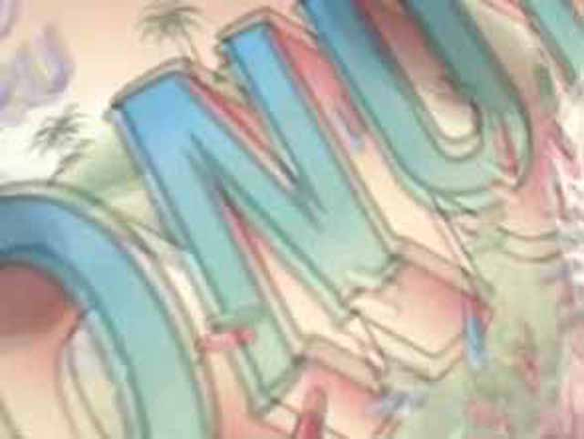
This sign is Homer Simpson friendly!
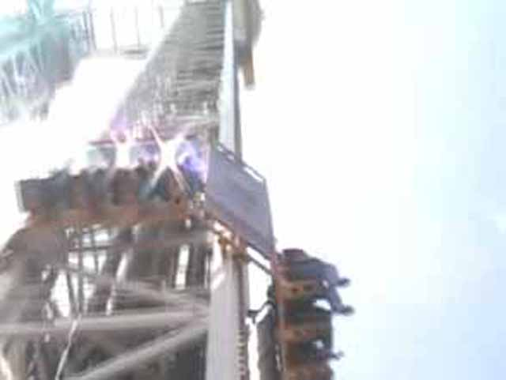
There goes Maliboomer!
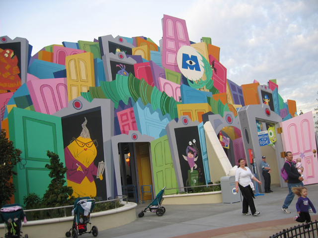
OMG! Monsters Inc opened EARLY!!!!!!
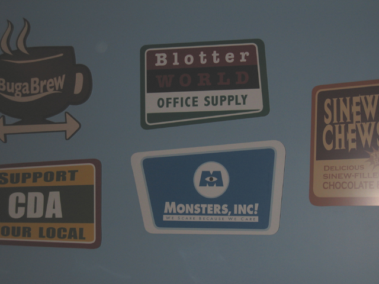
Here is the cheesy scenery in line.
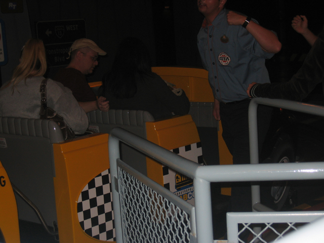
The whole dark ride is lame and they used stuff from Superstar Limo! Overall, Not one of disneys greatest dark rides.
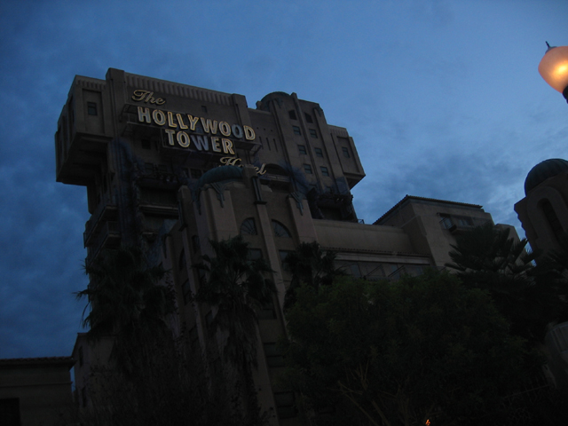
Tower of Terror looks alot better in the dark!
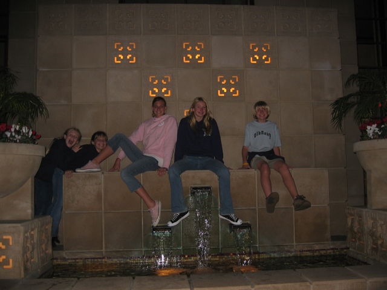
I wonder what the staff would say if we fell into the fountain?
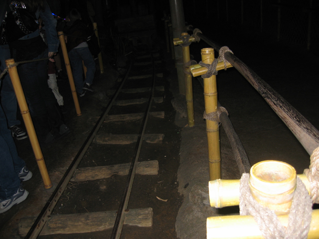
Hey! Its that forgotten credit that I saw from Fall 2005 Photos!
Home